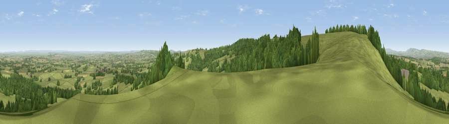

Viewpoint near Buckland St. Mary
#4073 in England · top 10% of its area beats it · near Buckland St. MaryThe view, rendered

A 360° render of this exact spot computed from the terrain model, tree cover and land cover — summer colours, afternoon light, calibrated against photographs of famous viewpoints. Real trees, hedges and buildings will differ in detail.
The panorama
Grey silhouette: terrain skyline in each direction (720 bearings, Earth curvature and refraction included). Dashed green: skyline with trees (+15 m) and buildings (+8 m) as obstacles. Blue strip: how far the ground is visible on each bearing.
Where the view opens
Wedge length = distance to the farthest visible ground on that bearing (vegetation-aware). Rings at 10, 25 and 50 km.
What fills the view
63% grassland · 30% woodland · 6% cropland ·
Angular shares of the visible panorama (visual magnitude), not map area. Landscape diversity 0.37 (0–1 Shannon).
Key numbers
More beautiful places nearby
The staircase of upgrades: each row has a higher view potential than everything closer. Driving times are estimates from straight-line distance, calibrated against real road routing — check an actual route before setting out.
| Place | Direction | Drive | Score |
|---|---|---|---|
| Viewpoint near Buckland St. Mary | WNW · 1 km | ~2 min | 77.3 |
| Viewpoint near Hewish | ESE · 14 km | ~25 min | 78.5 |
| Lambert's Castle Hill | SSE · 19 km | ~32 min | 78.7 |
| Cothelstone Hill | NNW · 19 km | ~33 min | 82.1 |
| Lewesdon Hill | SE · 21 km | ~36 min | 83.3 |
| Viewpoint near West Bagborough | NNW · 21 km | ~36 min | 84.3 |
| Wills Neck | NNW · 23 km | ~38 min | 85.7 |
| Viewpoint near North Chideock | SSE · 26 km | ~43 min | 87.1 |
50.93456, -3.02457 · source: screening · position refined by local search. Computed location — check access rights before visiting.